Bioestadística · Clase 10
Introducción
El mundo en el que vivimos no es de una sola dimensión, es multivariante, con múltiples dimensiones, con muchos datos cruzándose todo el tiempo y con medidas de más de una variable aleatoria.
Definición formal: «rama de la estadística que abarca la observación y el análisis simultáneos de más de una variable respuesta».
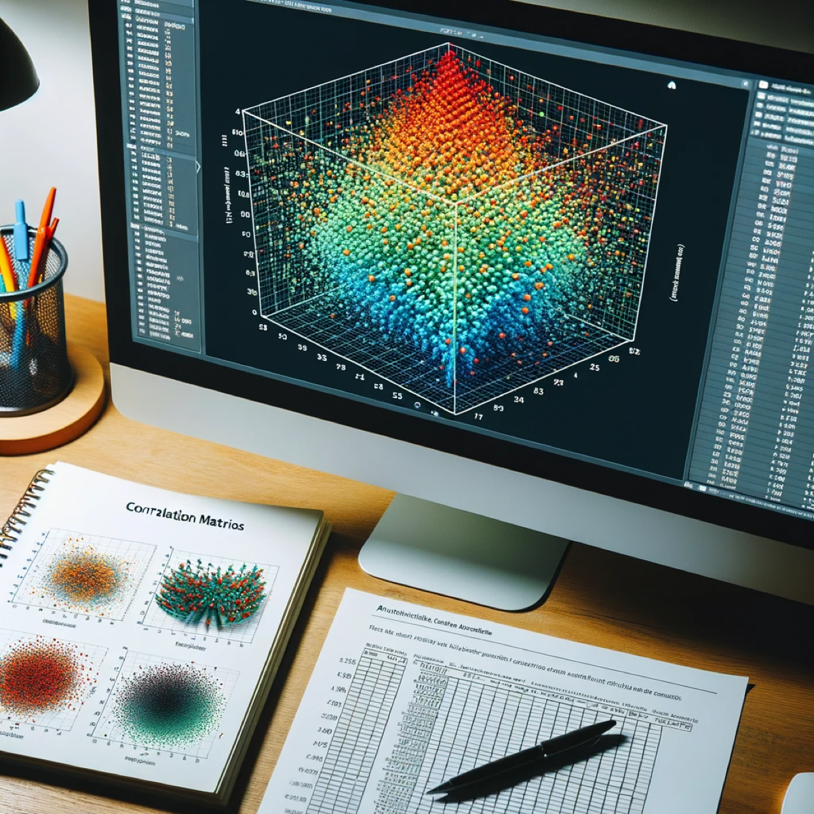
Introducción
Hay dos aplicaciones típicas de este tipo de estadística:
Reducción de información Feature reduction – Ordenación de la información (ordination).
Clustering Agrupación de clases de datos homogéneos.
Pero hay muchas más.
Parte 1
Medidas de distancia
Todos los métodos de clustering y ordination tienen una cosa en común: para poder llevar a cabo las agrupaciones necesitan definir y cuantificar la similitud entre las observaciones. El término distancia se emplea para cuantificar la similitud (o disimilitud; dissimilarity) entre observaciones.
Se calcula la «distancia» en una matriz de todos contra todos.
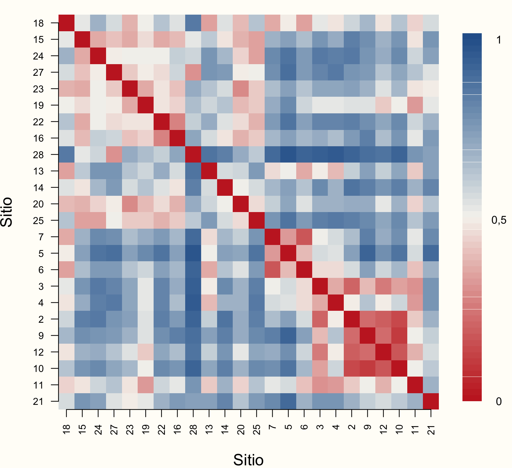
Medidas de distancia · Ejemplo
Distancia euclidiana entre ocho sitios, con la química del suelo estandarizada:
Cada celda es la distancia entre el sitio de la fila y el de la columna; la diagonal es 0 y la matriz es simétrica: basta con la mitad.
Medidas de distancia
Si se representan las observaciones en un espacio p dimensional, siendo p el número de variables asociadas a cada observación, cuanto más se asemejen dos observaciones, más próximas estarán. Por eso se emplea el término distancia.
La característica que hace del clustering y de la ordenación métodos adaptables a escenarios muy diversos es que pueden emplear cualquier tipo de distancia, lo que permite al investigador escoger la más adecuada para el estudio en cuestión. A continuación, se describen algunas de las más utilizadas.
Medidas de distancia
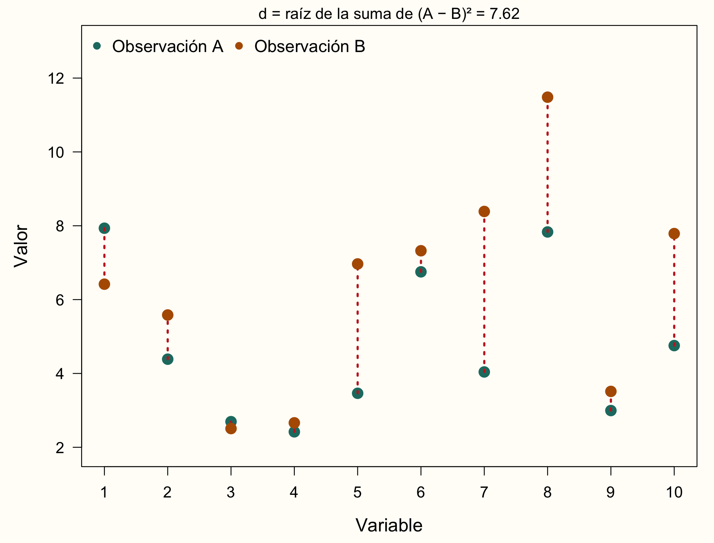
Es la distancia lineal más cercana entre los dos puntos, definida como la longitud del segmento que une ambos puntos.
Para: variables continuas con distribución cercana a la normal
Medidas de distancia
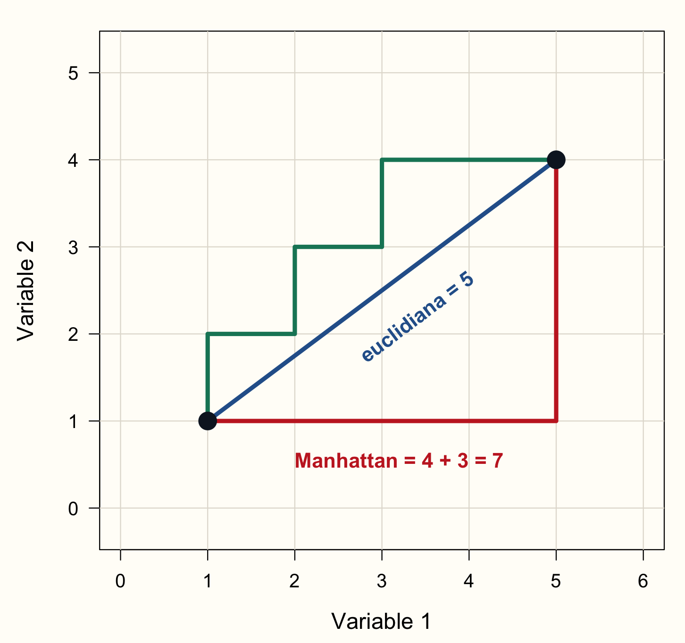
Distancia entre dos puntos como la sumatoria de las diferencias absolutas entre cada dimensión. Esta medida se ve menos afectada por outliers (es más robusta) que la distancia euclidiana debido a que no eleva al cuadrado las diferencias.
Para: variables continuas, no normales y con posibles outliers
Tu turno · Predecir y verificar
⏱ 3 min · en parejas
Dos sitios con la cobertura de dos especies:
| Especie 1 | Especie 2 | |
|---|---|---|
| Sitio A | 2 | 5 |
| Sitio B | 6 | 2 |
Calculen a mano la distancia euclidiana y la Manhattan.
Euclidiana: √((6−2)² + (2−5)²) = √25 = 5. Manhattan: |6−2| + |2−5| = 7.
Verifíquenlo en R:
Medidas de distancia
Índice de Jaccard Cuando las variables con las que se pretende determinar la similitud entre observaciones son de tipo binario, a pesar de que es posible codificarlas de forma numérica como 1 o 0, no tiene sentido aplicar operaciones aritméticas sobre ellas (media, suma…).
Para: variables binarias
Distancia Bray-Curtis Método normalizado (va de 0 a 1) muy usado en botánica y ecología, ya que funciona bien con variables positivas como abundancias o coberturas. No se ve afectado por grandes cantidades de ceros.
Para: abundancias, coberturas, porcentajes o proporciones
Medidas de distancia · Resumen
La distancia ideal a utilizar va a depender completamente de los datos que estamos usando.
| Datos | Distancia |
|---|---|
| Continuos y sin outliers | Euclidiana |
| No normales y con outliers | Manhattan |
| Binarios, con muchos ceros (presencia/ausencia de especies) | Jaccard |
| Abundancias, coberturas, porcentajes o proporciones | Bray-Curtis |
Por supuesto, existen muchos otros índices de distancia que pueden buscar y utilizar.
Medidas de distancia · R en el navegador
Coberturas (%) de cuatro especies en tres sitios de varespec. Cambien method por "manhattan" o "jaccard" y ejecuten de nuevo.
Tu turno · Discusión
⏱ 3 min · en parejas
s1 y s2 no comparten ninguna especie. ¿Están cerca o lejos? ¿Qué dice cada distancia?
La euclidiana los pone muy cerca (1,41): comparten muchos ceros. Bray-Curtis dice 1 (nada en común). Los dobles ceros no indican parecido: por eso, para especies, Bray-Curtis.
Tu turno · Completar el código
⏱ 4 min
Completen el método adecuado para cada tipo de dato y ejecuten.
Opciones para method (siempre entre comillas): "euclidean" (euclidiana) · "manhattan" (Manhattan) · "jaccard" (Jaccard) · "bray" (Bray-Curtis). dist() acepta "euclidean" y "manhattan"; vegdist() acepta las cuatro.
Repasen la tabla «¿Cuál distancia usar?»: abundancias → …, binarios → …, continuas → ….
Medidas de distancia
Tienen coberturas de 44 especies en 24 sitios, con muchos ceros. ¿Qué distancia usan?
Bray-Curtis: funciona con variables positivas como abundancias o coberturas y no se ve afectada por los dobles ceros (dos sitios no se parecen por no tener la misma especie).
Parte 2
Ordenación
Imagínense que quieren hacer un modelo predictivo de regresión, o un test de ANOVA, pero tienen CIENTOS de variables. ¿Cómo pueden elegir las mejores variables? ¿Cómo analizar patrones generales en cientos de variables?
Dado un problema de clasificación… ¿cómo elegimos las variables correctas?
¡Más no es siempre mejor!
Ordenación
Por ejemplo, si se registran las abundancias de diez especies en diferentes sitios, entonces la variación total entre sitios podría ser representada gráficamente en diez dimensiones (i.e., una por especie). Obviamente, esto no es muy eficiente. Sin embargo, si solo hubiera unas pocas tendencias o gradientes claves compartidas entre las especies, entonces se podría derivar un conjunto más pequeño de ejes (por ejemplo, dos) que resumiera la mayor parte de la variación en el conjunto de datos.
El término «ordenación» refleja la intención original del enfoque: identificar gradientes únicos (es decir, respuestas ordenadas) de variables que podrían reflejar los procesos ecológicos.
Ordenación
«Muchos algoritmos que funcionan bien en pocas dimensiones se vuelven intratables cuando la entrada es de alta dimensión».
Bellman, 1961
Ordenación
¿Qué significa que los datos tengan alta dimensionalidad? → ¡Número de variables!
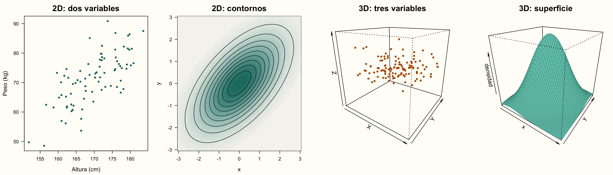
Con dos variables se puede graficar todo en un plano; con tres, en un cubo. Con más de tres ya no podemos verlo directamente.
Ordenación
¿Qué significa que los datos tengan alta dimensionalidad? → ¡Número de variables!
¿Cómo lo hacemos con 100 o más variables?
Ordenación
Para reducir la dimensionalidad de las variables dentro de un análisis estadístico (i.e., tener menos variables), hay dos formas principales:
Selección de variables (feature selection)
Seleccionar variables; ejemplo: stepwise selection.
Extracción de variables (feature extraction)
Extraer la información relevante del conjunto de variables y crear un número menor de nuevos componentes con esa información resumida.
Tu turno · Discusión
⏱ 3 min · en parejas
Piensen en un problema de su área con más de 50 variables. ¿Qué harían: seleccionar algunas o extraer componentes? ¿Qué se gana y qué se pierde?
Selección: se conservan variables interpretables (p. ej., 5 bandas espectrales), pero se descarta información.
Extracción (PCA, PCoA, NMDS): se conserva casi toda la información en pocos ejes, pero cada eje mezcla todas las variables y hay que interpretarlo.
Para estudiar · Ordenación
Imagínense que quieren hacer un modelo predictivo de regresión, o un test de ANOVA, pero tienen CIENTOS de variables. ¿Cómo pueden elegir las mejores variables? ¿Cómo analizar patrones generales en cientos de variables? ¡Más no es siempre mejor!
Por ejemplo, si se registran las abundancias de diez especies en diferentes sitios, entonces la variación total entre sitios podría ser representada gráficamente en diez dimensiones (i.e., una por especie). Obviamente, esto no es muy eficiente. Sin embargo, si solo hubiera unas pocas tendencias o gradientes claves compartidas entre las especies, entonces se podría derivar un conjunto más pequeño de ejes (por ejemplo, dos) que resumiera la mayor parte de la variación en el conjunto de datos.
El término «ordenación» refleja la intención original del enfoque: identificar gradientes únicos (es decir, respuestas ordenadas) de variables que podrían reflejar los procesos ecológicos.
Para reducir la dimensionalidad de las variables dentro de un análisis estadístico (i.e., tener menos variables), hay dos formas principales: (1) Feature selection: seleccionar variables; ejemplo: stepwise selection. (2) Feature extraction: extraer la información relevante del conjunto de variables y crear un número menor de nuevos componentes con esa información resumida.
Parte 3 · PCA
Análisis de componentes principales
Reducir la dimensionalidad conservando la mayor parte posible de la aleatoriedad (variación) del espacio de alta dimensión.
¡Reducir el número de variables sin eliminar información relevante!
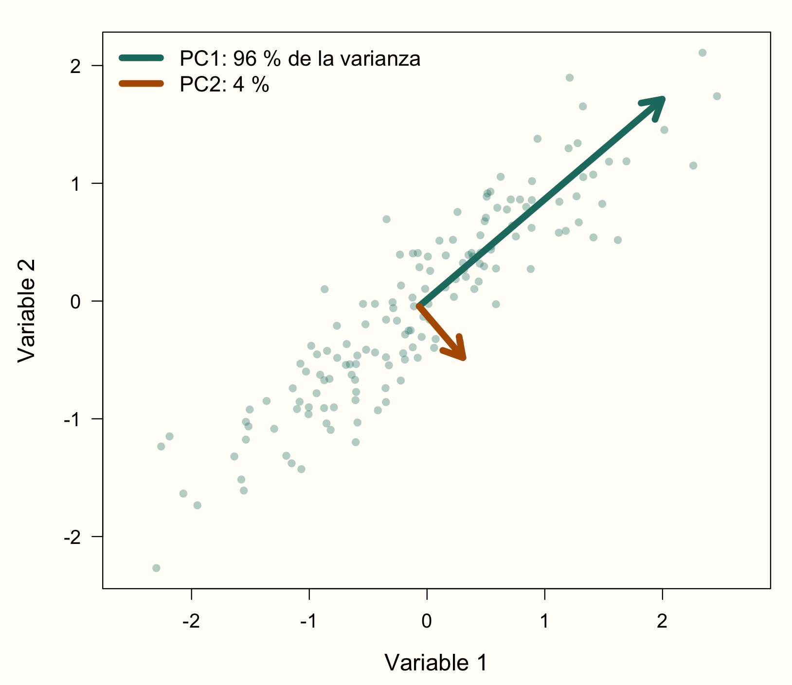
Análisis de componentes principales
Permite simplificar la complejidad de espacios muestrales con muchas dimensiones a la vez que conserva su información. Supóngase que existe una muestra con n individuos, cada uno con p variables (X1, X2, …, Xp), es decir, el espacio muestral tiene p dimensiones.
PCA permite encontrar un número de factores subyacentes (z < p) que explican aproximadamente lo mismo que las p variables originales. Donde antes se necesitaban p variables para caracterizar a cada individuo, ahora bastan z. Estas nuevas variables se llaman componentes principales y tienen la característica de no estar linealmente correlacionadas entre ellas.
Análisis de componentes principales
Cada componente principal (Zi) se obtiene por combinación lineal de las variables originales. Se pueden entender como nuevas variables obtenidas al combinar de una determinada forma las variables originales.
La primera componente principal de un grupo de variables (X1, X2, …, Xp) es la combinación lineal normalizada de dichas variables que tiene mayor varianza. Una vez calculada la primera componente (Z1), se calcula la segunda (Z2) repitiendo el mismo proceso, pero añadiendo la condición de que la combinación lineal no puede estar correlacionada con la primera componente.
Análisis de componentes principales
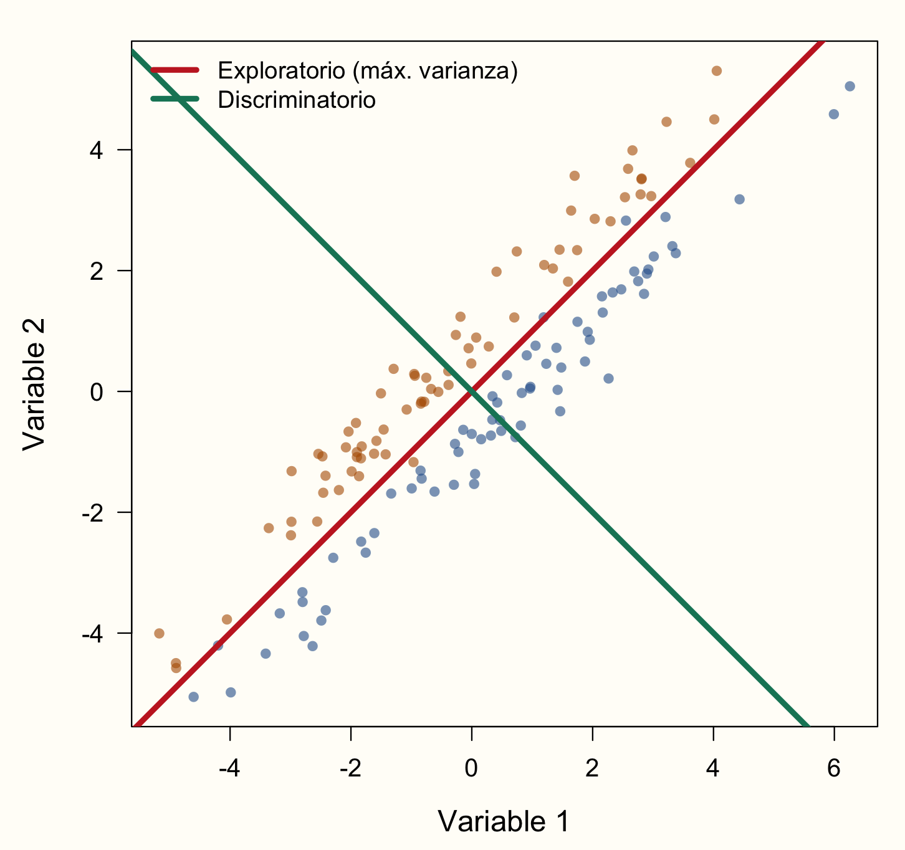
Términos del PCA
Loadings: pueden interpretarse como el peso/importancia que tiene cada variable en cada componente y, por lo tanto, ayudan a conocer qué tipo de información recoge cada una de las componentes. Cada variable original no es asignada completamente a un solo componente principal, sino que la varianza de una variable puede ser compartida por muchos componentes.
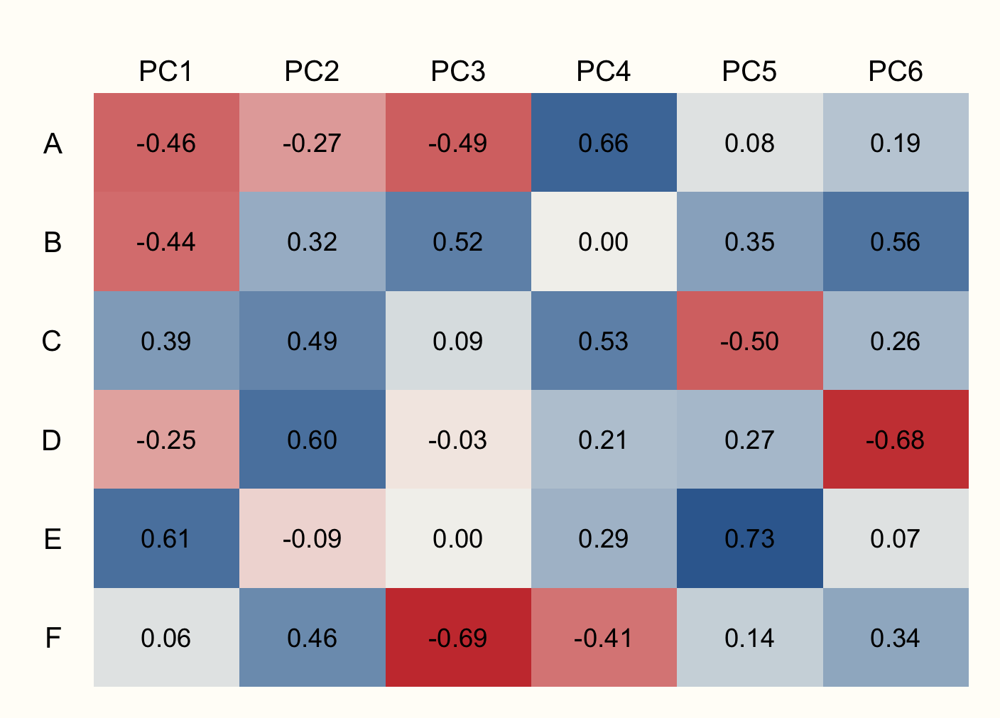
Términos del PCA
Scores: los scores son los componentes principales que el método crea para resumir la información de los datos originales. Son básicamente coordenadas nuevas.
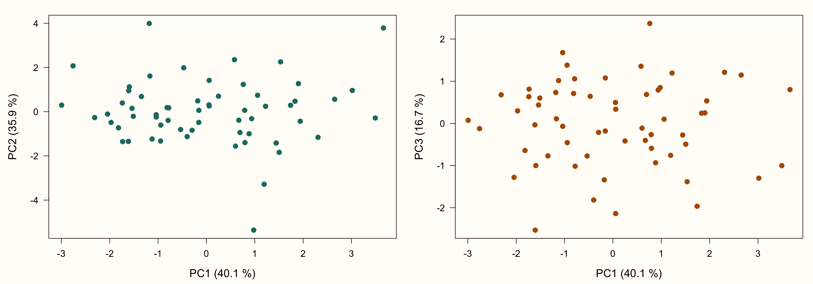
Términos del PCA
Los puntos son los scores de cada observación y las flechas, los loadings de cada variable. Esta figura combinada se llama biplot.
Tu turno · Interpretar
⏱ 3 min
Loadings del ejemplo A–F:
¿Qué variables definen el PC1? ¿Y cuál casi no aporta al PC1 y aparece en el PC3?
PC1 contrapone A y B (negativos) a E y C (positivos): un gradiente que combina varias variables. F casi no pesa en PC1 (0,06) y domina el PC3 (−0,69).
Términos del PCA
Eigenvectors y eigenvalues: estos dos conceptos están relacionados con los componentes o loadings. De manera simple, son propiedades de la matriz de covarianza (o de correlación, si se escalan los datos) que el PCA descompone. Los eigenvectors serían las direcciones de rotación de cada componente, mientras que el eigenvalue es la cantidad de varianza que cada componente explica. Por lo tanto, el eigenvalue determina el orden de los componentes en PCA.
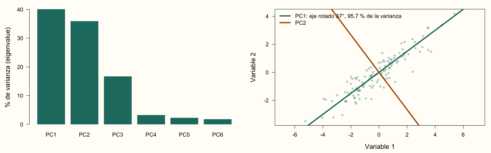
PCA en R
Normalmente el criterio para seleccionar el número deseado de componentes es graficar la varianza acumulada de los eigenvalues y elegir el punto de inflexión (elbow). La idea es reducir la dimensionalidad de los datos, por lo que un número bajo de componentes es deseado. Además, normalmente los componentes altos (i.e., baja varianza) en general tienen mucho ruido.
Ejemplo: datos foliares de pigmentos (clorofila, carotenoides, contenido de agua, …) con datos hiperespectrales tomados por espectroscopia de campo (datos de reflectancia de teledetección = 2051 variables).
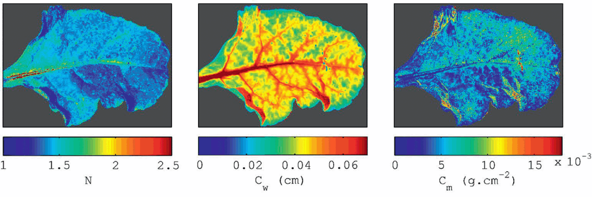
Práctico 12 · PCA
Base ANGERS. Este código corre en el navegador: pulsen Run Code para ver el resultado; se puede editar y volver a ejecutar. Ejecutando en orden desde aquí, los resultados son los mismos del práctico.
Práctico 12 · PCA
Práctico 12 · PCA
Cada una de las 2051 longitudes de onda es una variable. Bandas vecinas están muy correlacionadas: mucha información redundante.
PCA en R
Los elementos center y scale contienen la media y la desviación típica de las variables antes de estandarizar; rotation, los loadings (eigenvectors); x, los scores.
¡Escalar los datos es siempre importante!
PCA en R · R en el navegador
Química del suelo (varechem): el calcio está en cientos y el pH cerca de 3. Cambien a scale = FALSE y miren qué variable domina.
PCA en R
¡Cada nuevo componente (ej., PC1) tiene información de todas las variables originales! (ej., X400, X401, …)
PCA en R
Hay información compartida de cada variable (filas) en cada componente (columnas). Por lo tanto, cada componente se podría descomponer linealmente:
PC1 = ϕ11 · X400 + ϕ21 · X401 + … + ϕ2051,1 · X2450
prcomp() multiplica los datos (escalados) por los loadings: el resultado son los scores, en la matriz x.
PCA en R
El número de componentes es min(n, p): no puede haber más ejes independientes que observaciones.
PCA en R
Los eigenvalues (sdev²) como proporción de la varianza total: PC1 explica el 46 % de toda la información, PC2 el 32 %, PC3 el 14 %…
PCA en R
Punto donde, si aumentamos los componentes, ya no aumenta mucho la información acumulada… ¡Parsimonia!
¡Solo 3 componentes principales tienen más del 90 % de la información de las 2051 variables!
Tu turno · Completar el código
⏱ 3 min
Usen la varianza acumulada del PCA de reflectancia para encontrar el primer componente que llega al 95 %.
Qué escribir: un número entre 0 y 1 (proporción, con punto decimal). Ej.: 90 % se escribe 0.9; 80 %, 0.8.
El umbral se escribe como proporción (entre 0 y 1).
¿Usarían 3 o 5 componentes? Justifiquen con la curva y con la idea de ruido.
PCA en R
Los dos primeros componentes contienen cerca del 78 % de la varianza de los datos.
PCA en R
PCA en R
PCA en R
Las proyecciones de los puntos sobre los vectores tienen la máxima correlación con las variables correspondientes.
Ej.: Cw (contenido de agua) se relaciona con PC1 (negativo) y PC2 (positivo). Los puntos más lejos en la dirección de la flecha son las hojas con más agua; los del lado opuesto, las de menos.
N y Cw tienen los r² más altos (0,89 y 0,81): son los rasgos mejor representados por los dos primeros componentes.
Tu turno · Aplicar
⏱ 6 min · en parejas
Repitan el flujo del PCA con varechem (14 variables del suelo, 24 sitios).
Opciones para scale: TRUE (estandarizar cada variable) o FALSE (usar las unidades originales). Sin comillas.
Las variables tienen unidades muy distintas (Ca en cientos, pH cerca de 3).
¿Cuánta varianza explican los dos primeros ejes? ¿Qué variables van juntas en el PC1?
Parte 4 · Análisis de coordenadas principales
PCoA
El análisis de coordenadas principales (PCoA, principal coordinates analysis) es una extensión conceptual de la técnica de PCA descrita anteriormente. De manera similar, busca ordenar los objetos a lo largo de los ejes de las coordenadas principales para maximizar la varianza del conjunto de datos original. Sin embargo, mientras que el PCA organiza los objetos linealmente mediante medidas de distancia euclidianas, el PCoA puede aplicarse con cualquier matriz de distancia (dissimilarity) (Gower 1966).
PCoA utiliza matrices de distancia como input. Los puntos son las observaciones: la distancia entre ellos aproxima la disimilitud elegida (p. ej., Bray-Curtis). También genera muchos componentes: tantos como observaciones. Con distancias no euclidianas algunos eigenvalues salen negativos y esos ejes no se dibujan.
PCoA
Los objetos más cercanos en el gráfico tienen disimilitudes menores.
Un PCoA exitoso captura la mayor parte de la variación de la matriz en pocos ejes.
Práctico 12 · PCoA
Práctico 12 · PCoA
Muchos ceros y distribución muy asimétrica: aquí tendríamos muchos problemas con PCA u otro método usando distancias euclidianas.
PCoA en R
Si molestan, pcoa(varespec.bray, correction = "cailliez") (o "lingoes") los corrige.
PCoA en R
PCoA en R
El eje 1 explica el 29 % y los dos primeros, el 49 %: sube más lento que en el PCA de reflectancia.
Práctico 12 · PCoA
Práctico 12 · PCoA
Tres componentes sigue siendo el punto óptimo.
Tu turno · Predecir y verificar
⏱ 4 min
Predigan: con Jaccard (presencia/ausencia), ¿habrá más o menos eigenvalues negativos que con Bray-Curtis (8)? ¿Los dos primeros ejes explicarán más o menos del 49 %?
Opciones para method (siempre entre comillas): "euclidean" (euclidiana) · "manhattan" (Manhattan) · "jaccard" (Jaccard) · "bray" (Bray-Curtis). Con binary = TRUE, vegdist() usa solo presencia/ausencia.
Presencia/ausencia → el índice binario de la clase.
Jaccard: 7 negativos y solo 32 % en dos ejes (Bray-Curtis: 49 %). Al quedarse solo con presencia/ausencia se pierde la información de abundancia.
Tu turno · Discusión
⏱ 2 min
…¿para qué sirve el PCoA?
Para usar cualquier distancia: Bray-Curtis con especies, Jaccard con presencia/ausencia, Gower con variables mixtas. El PCA queda atado a la euclidiana.
Parte 5 · Escalamiento multidimensional no métrico
NMDS
Es una técnica de ordenación única, ya que se elige explícitamente un (pequeño) número de ejes de ordenación antes del análisis y los datos se ajustan a esas dimensiones. Por ej., el total de la variación de los datos de entrada se puede transformar en 2-3 componentes.
De manera similar al PCoA, se calcula primero una matriz de diferencias de objetos utilizando una métrica de distancia elegida (lineal, no lineal, etc.).
NMDS
En NMDS, se calculan los rangos de estas distancias entre todos los objetos. El algoritmo encuentra entonces una configuración de objetos en el espacio ordinal elegido de N dimensiones que se ajusta mejor a las diferencias de rangos (Kruskal 1964).
Se usa una métrica de costo, el stress, para identificar el mejor número de componentes k a crear. Valores de stress bajo 0,15 se consideran buenos.
En este caso, la distancia y la ubicación en las coordenadas no importan; únicamente dicen si dos puntos están cerca entre sí (= contienen información similar) o lejos (= información distinta).
Práctico 12 · NMDS
Práctico 12 · NMDS
Con k = 2 el stress es 0,18 (> 0,15); con k = 3 baja a 0,12: usamos k = 3.
Práctico 12 · NMDS
Tu turno · Interpretar
⏱ 3 min
Con la tabla env3 de la lámina anterior:
¿Qué variables del suelo se asocian con la composición de especies? ¿Qué significa r² = 0,60 con p = 0,001 para Mn?
Mn, Humdepth y Al tienen los r² más altos (0,49–0,60, p = 0,001); N no es significativo (p ≈ 0,06). r² = 0,60: el 60 % de la variación de Mn entre sitios se explica por su posición en la ordenación; p = 0,001: ninguna de 999 permutaciones al azar logró un ajuste tan alto.
NMDS en R · Ejercicio
Completen el código para calcular el stress con k = 1 a 4 y elijan el menor k con stress < 0,15.
distance: "euclidean" · "manhattan" · "jaccard" · "bray" (entre comillas). Umbral: un número decimal con punto, p. ej. 0.2.
Para coberturas de especies usamos la distancia "bray"; el umbral de stress de la clase es 0.15.
Tu turno · Aplicar
⏱ 10 min · en parejas
mite: abundancia de 35 especies de ácaros en 70 muestras de turbera; mite.env: densidad del sustrato, contenido de agua, tipo de sustrato, arbustos y microtopografía.
distance: "euclidean" · "manhattan" · "jaccard" · "bray" (entre comillas). k: un número entero sin comillas (1, 2, 3 o 4), según el stress del paso 1.
Distancia para abundancias: la de la clase. Elijan el menor k con stress < 0,15 (o uno más, si queda justo en el límite).
data(mite); data(mite.env)
stress <- sapply(1:4, function(k) metaMDS(mite, distance = "bray", k = k, trace = 0)$stress)
round(stress, 3) # ~0.22 0.15 0.12 0.09 -> k = 3 (k = 2 queda justo en 0,15)
nmds_m <- metaMDS(mite, distance = "bray", k = 3, trace = 0)
env_m <- envfit(nmds_m, mite.env)
env_m # WatrCont r2 ~0.70; Shrub, Topo y Substrate significativos
ordiplot(nmds_m, type = "text"); plot(env_m)Escriban 2–3 líneas: ¿qué variable ambiental explica mejor la composición de ácaros?
Cierre
| Método | Distancia | Ejes | En R |
|---|---|---|---|
| PCA | euclidiana (datos escalados) | min(n, p), ordenados por varianza | prcomp(X, scale = TRUE) |
| PCoA | cualquiera | uno por observación; negativos si no es euclidiana | pcoa(vegdist(X)) |
| NMDS | cualquiera (rangos) | k fijado antes; elegir por stress < 0,15 | metaMDS(X, k = ) |
La distancia se elige según los datos; el método de ordenación, según la distancia. Todo el código está en Practicos/12_multivariante.R.
Tu turno · Cierre
⏱ 3 min · individual
Para cada caso, ¿qué distancia y qué método de ordenación usarían? Justifiquen en una línea.
Bioestadística · Clase 10 · Estadística multivariante